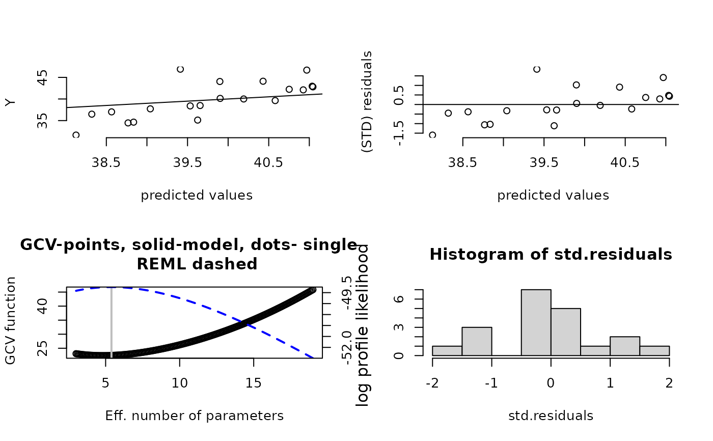
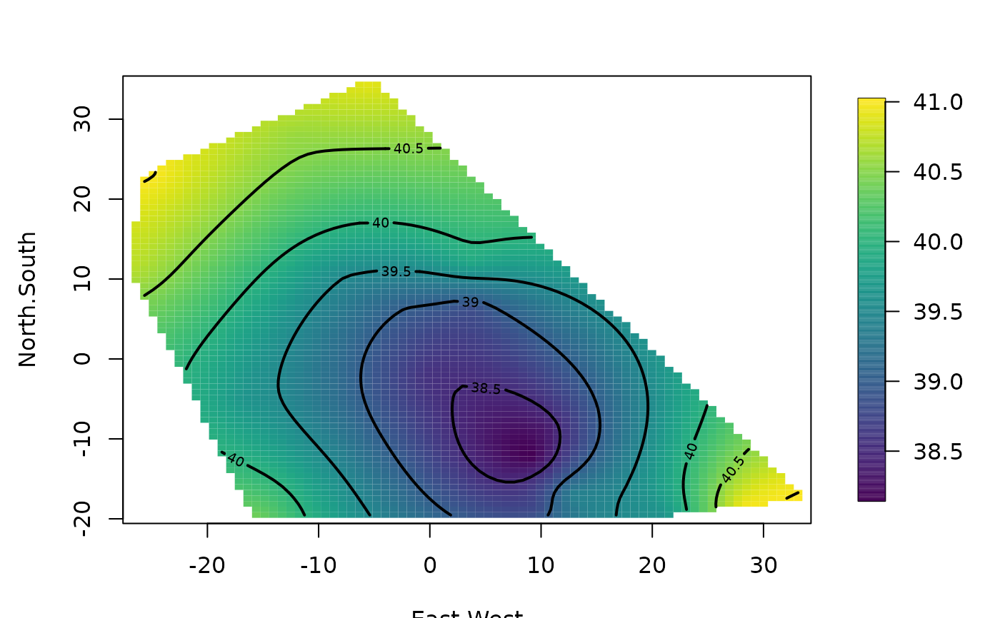
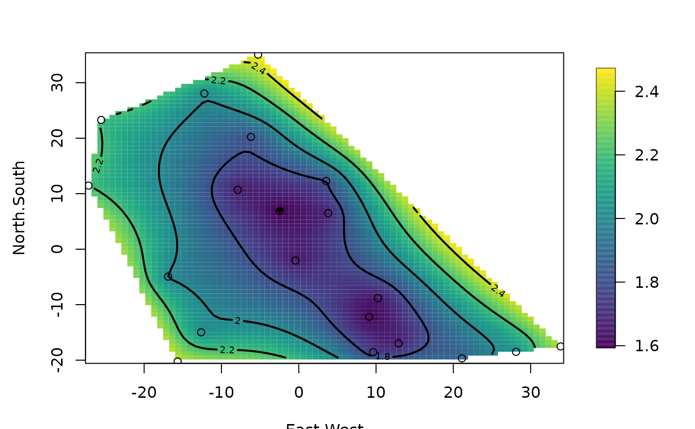

Krig.RdFits a surface to irregularly spaced data. The Kriging model assumes that the unknown function is a realization of a Gaussian random spatial processes. The assumed model is additive Y = P(x) + Z(X) + e, where P is a low order polynomial and Z is a mean zero, Gaussian stochastic process with a covariance that is unknown up to a scale constant. The main advantages of this function are the flexibility in specifying the covariance as an R language function and also the supporting functions plot, predict, predictSE, surface for subsequent analysis. Krig also supports a correlation model where the mean and marginal variances are supplied.
Krig(x, Y, cov.function = "stationary.cov", lambda = NA, df
= NA, GCV = FALSE, Z = NULL, cost = 1, weights = NULL,
m = 2, nstep.cv = 200, scale.type = "user", x.center =
rep(0, ncol(x)), x.scale = rep(1, ncol(x)), sigma =
NA, tau2 = NA, method = "REML", verbose = FALSE,
null.function = "Krig.null.function", wght.function =
NULL, offset = 0, na.rm = TRUE, cov.args = NULL,
chol.args = NULL, null.args = NULL, wght.args = NULL,
W = NULL, give.warnings = TRUE, mean.obj = NA, sd.obj
= NA, ...)
# S3 method for Krig
fitted(object,...)
# S3 method for Krig
coef(object,...)
resid.Krig(object,...)Arguments to be passed to the cholesky decomposition in Krig.engine.fixed. The default if NULL, assigned at the top level of this function, is list( pivot=FALSE). This argument is useful when working with the sparse matrix package.
A list with the arguments to call the covariance function. (in addition to the locations)
Covariance function for data in the form of an R function (see
Exp.simple.cov as an example).
Default assumes that correlation is an exponential function of distance.
See also stationary.cov for more general choice of covariance
shapes. exponential.cov will be faster if only the exponential
covariance form is needed.
Cost value used in GCV criterion. Corresponds to a penalty for increased number of parameters. The default is 1.0 and corresponds to the usual GCV function.
The effective number of parameters for the fitted surface. Conversely, N- df, where N is the total number of observations is the degrees of freedom associated with the residuals. This is an alternative to specifying lambda and much more interpretable. NOTE: GCV argument defaults to TRUE if this argument is used.
If TRUE matrix decompositions are done to allow estimating lambda by GCV or REML and specifying smoothness by the effective degrees of freedom. So the GCV switch does more than just supply a GCV estimate. Also if lambda or df are passed the estimate will be evaluated at those values, not at the GCV/REML estimates of lambda. If FALSE Kriging estimate is found under a fixed lambda model.
If TRUE warnings are given in gcv grid search limits. If FALSE warnings are not given. Best to leave this TRUE! This argument is set ot FALSE if warn is less than zero in the top level, R options function. See options()$warn
Smoothing parameter that is the ratio of the error variance (tau**2) to the scale parameter of the covariance function (sigma). If omitted this is estimated by GCV ( see method below).
Determines what "smoothing" parameter should be used. The default is to estimate standard GCV Other choices are: GCV.model, GCV.one, RMSE, pure error and REML. The differences are explained below.
Object to predict the mean of the spatial process. This used in when fitting a correlation model with varying spatial means and varying marginal variances. (See details.)
A polynomial function of degree (m-1) will be included in the model as the drift (or spatial trend) component. The "m" notation is from thin-plate splines where m is the derivative in the penalty function. With m=2 as the default a linear model in the locations will be fit a fixed part of the model.
If TRUE NAs will be removed from the y vector and the
corresponding rows of x -- with a warning.
If FALSE Krig will just stop with a message. Once NAs are removed all
subsequent analysis in fields does not use those data.
Number of grid points for the coarse grid search to minimize the GCV RMLE and other related criteria for finding lambda, the smoothing parameter. Default is 200, fairly large to avoid some cases of closely spaced local minima. Evaluations of the GCV and related objective functions are cheap given the matrix decompositions described below.
Extra arguments for the null space function
null.function. If fields.mkpoly is passed as
null.function then this is set to a list with the value of
m. So the default is use a polynomial of degree m-1 for the
null space (fixed part) of the model.
An R function that creates the matrices for the null space model. The default is fields.mkpoly, an R function that creates a polynomial regression matrix with all terms up to degree m-1. (See Details)
The offset to be used in the GCV criterion. Default is 0. This would be used when Krig is part of a backfitting algorithm and the offset is other model degrees of freedom from other regression components.
Scale factor for covariance.
This is a character string among: "range", "unit.sd", "user", "unscaled". The independent variables and knots are scaled to the specified scale.type. By default no scaling is done. This usuall makes sense for spatial locations. Scale type of "range" scales the data to the interval (0,1) by forming (x-min(x))/range(x) for each x. Scale type of "unit.sd" Scale type of "user" allows specification of an x.center and x.scale by the user. The default for "user" is mean 0 and standard deviation 1. Scale type of "unscaled" does not scale the data.
Object to predict the marginal standard deviation of the spatial process.
Variance of the errors, often called the nugget variance. If weights are specified then the error variance is tau2 divided by weights. Note that lambda is defined as the ratio tau2/sigma.
If true will print out all kinds of intermediate stuff. Default is false, of course as this is used mainly for debugging.
Weights are proportional to the reciprocal variance of the measurement error. The default is equal weighting i.e. vector of unit weights.
An R function that creates a weights matrix to the observations. This is only needed if the weight matirx has off diagonal elements. The default is NULL indicating that the weight matrix is a diagonal, based on the weights argument. (See details)
The observation weight matrix.
Optional arguments to be passed to the weight function (wght.function) used to create the observation weight matrix.
Matrix of independent variables. These could the locations for spatial data or the indepedent variables in a regression.
Centering values to be subtracted from each column of the x matrix.
Scale values that are divided into each column after centering.
Vector of dependent variables. These are the values of the surface (perhaps with measurement error) at the locations or the dependent response in a regression.
A vector of matrix of covariates to be include in the fixed part of the model. If NULL (default) no addtional covariates are included.
Optional arguments that appear are assumed to be additional arguments to the covariance function. Or are included in methods functions (resid, fitted, coef) as a required argument.
A Krig object
A object of class Krig. This includes the predicted values in fitted.values and the residuals in residuals. The results of the grid search to minimize the generalized cross validation function are returned in gcv.grid.
The coef.Krig function only returns the coefficients, "d", associated with the fixed part of the model (also known as the null space or spatial drift).
Call to the function
Vector of dependent variables.
Matrix of independent variables.
Vector of weights.
Locations used to define the basis functions.
List of components used in centering and scaling data.
Total number of parameters in the model.
Number of parameters in the null space.
List of matrices from the decompositions (D, G, u, X, qr.T).
Matrix of values from the GCV grid search. The first column is the grid of lambda values used in the search, the second column is the trace of the A matrix, the third column is the GCV values and the fourth column is the estimated value of tau conditional on the vlaue of lambda.
A table of estimated smoothing parameters with corresponding degrees of freedom and estimates of tau found by different methods.
Cost value used in GCV criterion.
Order of the polynomial space: highest degree polynomial is (m-1). This is a fixed part of the surface often referred to as the drift or spatial trend.
Effective degrees of freedom of the model.
Predicted values from the fit.
Residuals from the fit.
Value of the smoothing parameter used in the fit. Lambda is defined as tau**2/sigma. See discussion in details.
Name of the response.
Covariance function of the model.
Estimated coefficients in the ridge regression format
Estimated coefficients for the polynomial basis functions that span the null space
Fitted values for just the polynomial part of the estimate
Effective number of parameters in model.
Estimated coefficients for the basis functions derived from the covariance.
Same as the beta vector.
Logical describing if the data has been interpolated using the basis functions.
Estimated standard deviation of the measurement error (nugget effect).
Estimated variance of the measurement error (tauHat**2).
Scale factor for covariance. COV(h(x),h(x)) = sigma*cov.function(x,x)
If the covariance is actually a
correlation function then sigma is also the "sill".
Normalization of the covariance function used to find sigma.
Vector containing the value of lambda, the estimated variance of the measurement error and the scale factor for covariance used in the fit.
This function produces a object of class Krig. With this object it is easy to subsequently predict with this fitted surface, find standard errors, alter the y data ( but not x), etc.
The Kriging model is: Y.k= f(x.k) = P(x.k) + Z(x.k) + e.k
where ".k" means subscripted by k, Y is the dependent variable observed
at location x.k, P is a low order polynomial, Z is a mean zero, Gaussian
field with covariance function K and e is assumed to be independent
normal errors. The estimated surface is the best linear unbiased
estimate (BLUE) of f(x)= P(x) + Z(x) given the observed data. For this
estimate K, is taken to be sigma*cov.function and the errors have variance
tau**2. In more conventional geostatistical terms sigma is the "sill" if
the covariance function is actually a correlation function and tau**2
is the nugget variance or measure error variance (the two are confounded
in this model.) If the weights are given then the variance of e.k is
tau**2/ weights.k . In the case that the weights are specified as a
matrix, W, using the wght.function option then the assumed covariance
matrix for the errors is tau**2 Wi, where Wi is the inverse of W. It
is straightforward to show that the estimate of f only depends on tau
and sigma through the ratio lambda = tau**2/ sigma. This parameter, termed
the smoothing parameter plays a central role in the statistical
computations within Krig. See also the help for thin plate
splines, (Tps) to get another perspective on the smoothing
parameter.
This function also supports a modest extension of the Generalized
Kriging model to include other covariates as fixed regression type
components. In matrix form Y = Zb + F + E where Z is a matrix of
covariates and b a fixed parameter vector, F the vector of function values at
the observations and E a vector of errors. The The Z argument in
the function is the way to specify this additional component.
If the parameters sigma and tau2 are omitted in the call, then they are estimated in the following way. If lambda is given, then tau2 is estimated from the residual sum of squares divided by the degrees of freedom associated with the residuals. Rho is found as the difference between the sums of squares of the predicted values having subtracted off the polynomial part and tau2. These estimates are the MLE's under Gaussian assumptions on the process and errors. If lambda is also omitted is it estimated from the data using a variety of approaches and then the values for tau and sigma are found in the same way from the estimated lambda.
A useful extension of a stationary correlation to a nonstationary covariance is what we term a correlation model. If mean and marginal standard deviation objects are included in the call. Then the observed data is standardized based on these functions. The spatial process is then estimated with respect to the standardized scale. However for predictions and standard errors the mean and standard deviation surfaces are used to produce results in the original scale of the observations.
The GCV function has several alternative definitions when replicate observations are present or if one uses a reduced set knots. Here are the choices based on the method argument:
GCV: leave-one-out GCV. But if there are replicates it is leave one group out. (Wendy and Doug prefer this one.)
GCV.one: Really leave-one-out GCV even if there are replicate points. This what the old tps function used in FUNFITS.
rmse: Match the estimate of tau**2 to a external value ( called rmse)
pure error: Match the estimate of tau**2 to the estimate based on replicated data (pure error estimate in ANOVA language).
GCV.model: Only considers the residual sums of squares explained by the basis functions.
REML: The process and errors are assumed to the Gaussian and the likelihood is concentrated (or profiled) with respect to lambda. The MLE of lambda is found from this criterion. Restricted means that the likelihood is formed from a linear transformation of the observations that is orthogonal to the column space of P(x).
WARNING: The covariance functions often have a nonlinear parameter(s) that often control the strength of the correlations as a function of separation, usually referred to as the range parameter. This parameter must be specified in the call to Krig and will not be estimated.
See "Additive Models" by Hastie and Tibshirani, "Spatial Statistics" by Cressie and the FIELDS manual.
summary.Krig, predict.Krig, predictSE.Krig, predictSurfaceSE, predictSurface, plot.Krig, surface.Krig
# a 2-d example
# fitting a surface to ozone
# measurements. Exponential covariance, range parameter is 20 (in miles)
fit <- Krig(ChicagoO3$x, ChicagoO3$y, aRange=20)
summary( fit) # summary of fit
#> CALL:
#> Krig(x = ChicagoO3$x, Y = ChicagoO3$y, aRange = 20)
#>
#> Number of Observations: 20
#> Number of unique points: 20
#> Number of parameters in the null space 3
#> Parameters for fixed spatial drift 3
#> Effective degrees of freedom: 5.4
#> Residual degrees of freedom: 14.6
#> MLE tau 3.733
#> GCV tau 4.049
#> MLE sigma 4.796
#> Scale passed for covariance (sigma) <NA>
#> Scale passed for nugget (tau^2) <NA>
#> Smoothing parameter lambda 2.906
#>
#> Residual Summary:
#> min 1st Q median 3rd Q max
#> -6.4820 -1.6170 -0.5672 1.8010 7.4870
#>
#> Covariance Model: stationary.cov
#> Covariance function is
#> Names of non-default covariance arguments:
#> aRange
#>
#> DETAILS ON SMOOTHING PARAMETER:
#> Method used: REML Cost: 1
#> lambda trA GCV GCV.one GCV.model tauHat
#> 2.906 5.394 22.452 22.452 NA 4.049
#>
#> Summary of all estimates found for lambda
#> lambda trA GCV tauHat -lnLike Prof converge
#> GCV 4.120 4.799 22.39 4.125 49.26 4
#> GCV.model NA NA NA NA NA NA
#> GCV.one 4.120 4.799 22.39 4.125 NA 4
#> RMSE NA NA NA NA NA NA
#> pure error NA NA NA NA NA NA
#> REML 2.906 5.394 22.45 4.049 49.24 2
set.panel( 2,2)
#> plot window will lay out plots in a 2 by 2 matrix
plot(fit) # four diagnostic plots of fit

set.panel()
#> plot window will lay out plots in a 1 by 1 matrix
surface( fit, type="C") # look at the surface
# predict at data
predict( fit)
#> [,1]
#> [1,] 38.32080
#> [2,] 38.83593
#> [3,] 38.12672
#> [4,] 38.76760
#> [5,] 39.04168
#> [6,] 39.90186
#> [7,] 38.56459
#> [8,] 39.53299
#> [9,] 39.89821
#> [10,] 39.65490
#> [11,] 40.75214
#> [12,] 40.19162
#> [13,] 40.92551
#> [14,] 40.57972
#> [15,] 41.04454
#> [16,] 40.43037
#> [17,] 39.62459
#> [18,] 39.41161
#> [19,] 41.03544
#> [20,] 40.96869
# predict using 7.5 effective degrees of freedom:
predict( fit, df=7.5)
#> [,1]
#> [1,] 37.49035
#> [2,] 38.19014
#> [3,] 37.08185
#> [4,] 38.27208
#> [5,] 38.57329
#> [6,] 40.11896
#> [7,] 37.86026
#> [8,] 39.26797
#> [9,] 40.17369
#> [10,] 39.51753
#> [11,] 41.19223
#> [12,] 40.22450
#> [13,] 41.24735
#> [14,] 40.62566
#> [15,] 41.53740
#> [16,] 41.16773
#> [17,] 39.48732
#> [18,] 39.64519
#> [19,] 41.95582
#> [20,] 41.98016
# predict on a grid ( grid chosen here by defaults)
out<- predictSurface( fit)
surface( out, type="C") # option "C" our favorite

# predict at arbitrary points (10,-10) and (20, 15)
xnew<- rbind( c( 10, -10), c( 20, 15))
predict( fit, xnew)
#> [,1]
#> [1,] 38.28184
#> [2,] 40.13606
# standard errors of prediction based on covariance model.
predictSE( fit, xnew)
#> [1] 1.632105 3.054689
# surface of standard errors on a default grid
predictSurfaceSE( fit)-> out.p # this takes some time!
surface( out.p, type="C")
points( fit$x)

if (FALSE) {
# Using another stationary covariance.
# smoothness is the shape parameter for the Matern.
fit <- Krig(ChicagoO3$x, ChicagoO3$y,
Covariance="Matern", aRange=10, smoothness=1.0)
summary( fit)
#
# Roll your own: creating very simple user defined Gaussian covariance
#
test.cov <- function(x1,x2,aRange,marginal=FALSE,C=NA){
# return marginal variance
if( marginal) { return(rep( 1, nrow( x1)))}
# find cross covariance matrix
temp<- exp(-(rdist(x1,x2)/aRange)**2)
if( is.na(C[1])){
return( temp)}
else{
return( temp%*%C)}
}
#
# use this and put in quadratic polynomial fixed function
fit.flame<- Krig(flame$x, flame$y, cov.function="test.cov", m=3, aRange=.5)
#
# note how range parameter is passed to Krig.
# BTW: GCV indicates an interpolating model (nugget variance is zero)
# This is the content of the warning message.
# take a look ...
surface(fit.flame, type="I")
}
#
# Thin plate spline fit to ozone data using the radial
# basis function as a generalized covariance function
#
# p=2 is the power in the radial basis function (with a log term added for
# even dimensions)
# If m is the degree of derivative in penalty then p=2m-d
# where d is the dimension of x. p must be greater than 0.
# In the example below p = 2*2 - 2 = 2
#
out<- Krig( ChicagoO3$x, ChicagoO3$y,cov.function="Rad.cov",
m=2,p=2,scale.type="range")
# See also the Fields function Tps
# out should be identical to Tps( ChicagoO3$x, ChicagoO3$y)
#
if (FALSE) {
#
#
# explore some different values for the range and lambda using GCV
data(ozone2)
aRange <- seq(200,600,,40)
GCV<- matrix( NA, 40,80)
# the loop
for( k in 1:40){
# call to Krig with different ranges
# also turn off warnings for GCV search
# to avoid lots of messages. (not recommended in general!)
obj<-Krig( ozone2$lon.lat,ozone2$y[16,],
cov.function="stationary.cov",
aRange=aRange[k],
Covariance="Matern",smoothness=1.0,
Distance="rdist.earth", nstep.cv=80,
give.warnings=FALSE, na.rm=TRUE)
GCV[k,]<-obj$gcv.grid[,3]
}
# get lambda grid from looping
k<- 1
lam<- Krig( ozone2$lon.lat,ozone2$y[16,],
cov.function="stationary.cov",
aRange=aRange[k],
Covariance="Matern",smoothness=.5,
Distance="rdist.earth", nstep.cv=80,
give.warnings=FALSE, na.rm=TRUE)$gcv.grid[,1]
matplot( log10(lam), t(GCV),type="l",lty=1)
}